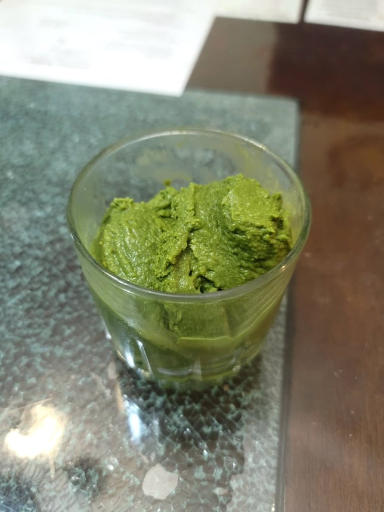

Matcha Ice Cream

Ingredients:
- 5 tbsp Matcha
- 2 1/4 cups Milk
- 3/4 cup Heavy cream
- 3/4 cup Sugar
- 1/8 tsp Salt
Instructions:
- Combine the milk, heavy cream, sugar, and salt into a medium pot over medium-low heat. Let warm just enough for the sugar to completely dissolve. Do not let boil.
- In a separate bowl, place the matcha powder. In about 3 tablespoon increments, slowly mix the milk mixture into the matcha, making sure that at every increment it is completely mixed before adding the next 3 tablespoons. Do this until it is a thick liquid.
- Then transfer the matcha paste milk back into the pot and whisk until homogenous. Once homogenous, transfer the mixture through a strainer to catch any matcha clumps and into a sealable container. Place the mixture into the fridge to chill completely, at least 4 hours.
- Turn on the ice cream maker and pour in the chilled mixture. It should come to a soft serve consistency in about 40 minutes. Then transfer to a sealable container and place into a freezer to firm up, at least 4 hours.